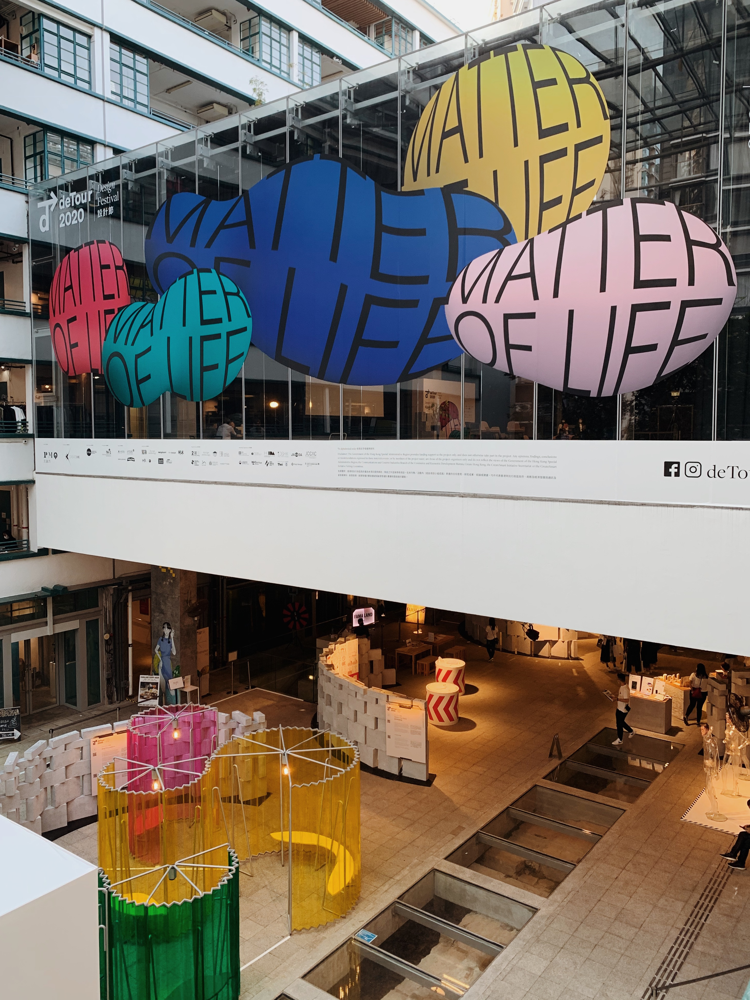

What I'm Up To

When I find the time between working on school projects and homework, I try to visit art exhibitions around Hong Kong. The most recent one I've been to is "Matter of Life." It was awesome to see Synoptic Office's work at the exhibit. Synoptic Office is a design studio by our very own Parsons faculty: Casper Lam and YuJune Park!

On slower days, I try to get at least some exercise by walking to the cafe 25 minutes away from my home. It's nice to take a stroll in the sunshine with my coffee and cheesecake. Coffee and food is a crucial motivator for me to get through a day's worth of work.